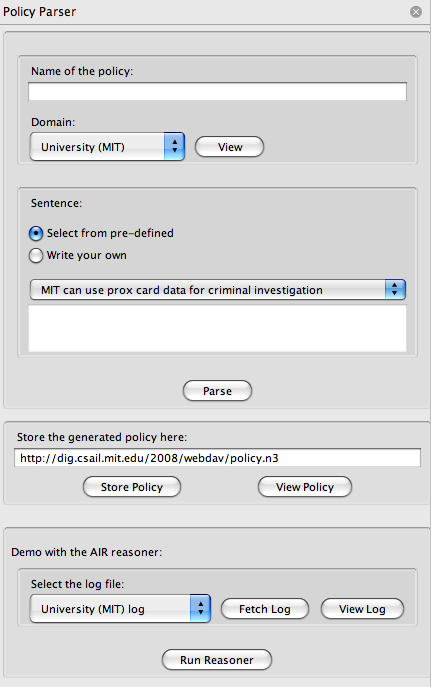

We have developed a Firefox sidebar extension which lets you write
a constrained natural language sentence and parse it. You can download and install
it from:
http://justparseit.googlecode.com/files/PolicyParser.xpi
Once it is installed on Firefox you can activate it by selecting "View -> Sidebar -> Policy Parser".
The sidebar will be displayed as follows:

Figure 1: Policy Parser Firefox Sidebar
Optional Pre-requisite:
Please install Tabulator Firefox Extension. This is not
required for the "Policy Parser" to work. However, it would render
the output rdf/n3 nicely on the browser itself. The absence of the Tabulator extension will make you download the generated file, and you will have to open
it with a text editor to view the contents.
Using the Policy Editor Sidebar:
First of all the user will have to specify a name for the policy that he/she intends to create. This name could be something like "MIT Prox Card Data Policy"
or "Massachusetts Disability Discrimination Policy". It is up to the user to select a meaningful name.
The user will then have to select a particular domain ontology. Once the domain ontology is selected the user can view the contents of the ontology
by clicking the "View" button. It should be borne in mind that the lexicon of the the system is limited by the phrases indicated in the
rdfs:label tags. Therefore it would be a good practice to look at the domain ontology (especially if you are writing your own sentence).
The following figure shows a typical domain ontology:
Figure 2: Domain Ontology
When inputing a sentence, the user has two options. He/she can select from pre-defined sentences displayed in the drop-down box (which are guaranteed to work) OR input a
sentence manually by looking at the sentence format.
Once a name is given to the policy, a domain ontology is selected, and a sentence is specified, the user can press the "parse" button. This will invoke
the python Policy Parser web service hosted at http://scripts.mit.edu/~oshani/justparseit/code/server/run.py
with the corresponding parameters. Please note that there could be a slight delay in seeing the actual result (so please be patient!). Once the result
is sent back to the browser you would be able to see the following:
Figure 3: Policy Parser Output
Now that you have generated the AIR policy you could make it persistant by either storing it in your local file system, or somewhere on the web.
For demonstration purposes, we have chosen to save it in a WebDAV space so that it will be universally accessible through a Universal Resource Identifier.
If you have your own WebDav space, please feel free to enter it in the text box underneath "Store the generated policy here: ". By default this text box
contains the value
http://dig.csail.mit.edu/2008/webdav/policy.n3. You could enter a new name instead of "policy.n3" and click the "Store Policy"
button. When storing the policy it will ask for some authorization. You can try out this feature by using the temperory username "policyparser" and password
"policyparser". Once you have clicked the "Store Policy" you could view the policy in it's new storgae location by clicking the "View Policy" button.